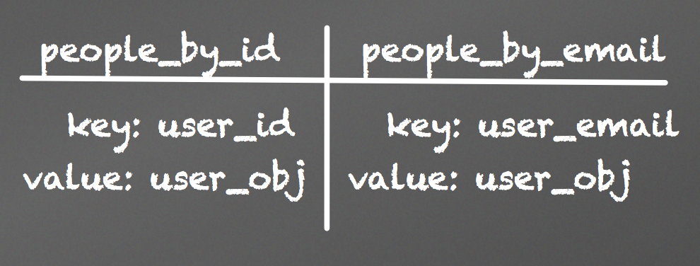

Hacking With Riak
DenverJS
Marketing...
Riak is an open source distributed database architected for:
- Availability
- Fault-Tolerance
- Operational Simplicity
- Scalability
What is it?
- NoSql key-value store
- Written in Erlang
- Implements ideas from Amazon's Dynamo

Getting Data In
Verify Host is up
$ curl -v http://192.168.33.10:10018/ping
HTTP/1.1 200 OK
OK%
PUT Data In
$ curl -v -X PUT http://192.168.33.10:10018/buckets/foo/keys/bar -d "Hello World"
HTTP/1.1 204 No Content
GET Data Out
$ curl http://192.168.33.10:10018/buckets/foo/keys/bar
HTTP/1.1 200 OK
Hello World%
Get All Buckets
$ curl -v http://192.168.33.10:10018/buckets\?buckets\=true
HTTP/1.1 200 OK
{"buckets":["foo"]}%
Get All Keys In A Bucket
curl -v http://192.168.33.10:10018/buckets/foo/keys\?keys\=true
HTTP/1.1 200 OK
{"keys":["bar"]}%
And there is more
- Links / Link Walking
- Metadata
- Mime Types
But you don't want to write this...
curl -X PUT http://localhost:8091/buckets/photos/keys/userid.jpg \
-H "Content-Type: image/jpeg" \
-H "Link: </buckets/users/keys/userid>; riaktag=\"profile_photo\"" \
--data-binary @user_profile_image.jpg
Let's talk about
Obtain a Connection
var db = require('riak-js').getClient({host: "riak.myhost", port: "8098"});
Put Something In
// db.save('bucket', 'key', 'value', metadata_object);
db.save('stock_symbols', 'SBUX', {'company': 'starbucks'},
{ links:
[{ bucket: 'exchanges', key: 'nasdaq', tag: 'traded_on' },
{ bucket: 'etfs', key: 'XLY', tag: 'etf_containing' }]
});
http://www.etfchannel.com/finder/?a=etfsholding&symbol=SBUX
Get Something Out
db.get('stock_symbols', 'SBUX', function(err, data, meta) {
if (err) throw err;
console.log(data);
console.log(meta.links);
});
Destroy Something
db.remove('stock_symbols', 'MSFT');
Data Modeling
How does one design for a key value store?
Tools
Embrace MANY writes
Same Data, Many Buckets

Creative Keys
SBUX:20140505
MSFT:20140505
FB:20140505
Back to Riak.js
Streaming Keys
db.keys('stock_symbols', { keys: 'stream' })
.on('keys', function(key){
console.log("Key: " + data)
})
.on('end', function(){
console.log("Done..");
})
.start()
Much better than: /buckets/stock_symbols/keys?keys=true
Count Your Keys
db.count('stock_symbols', function(err, data){ console.log(data) });
Link Walking
// Given:
db.save('exchanges', 'nasdaq', { 'location': 'nyc'});
db.save('stock_symbols', 'SBUX', {'company': 'starbucks'},
{ links: [{ bucket: 'exchanges', key: 'nasdaq', tag: 'traded_on' }] });
db.walk('stock_symbols', 'SBUX', [{bucket: 'exchanges', tag: "_"}], function(err, data){console.log(JSON.stringify(data));})